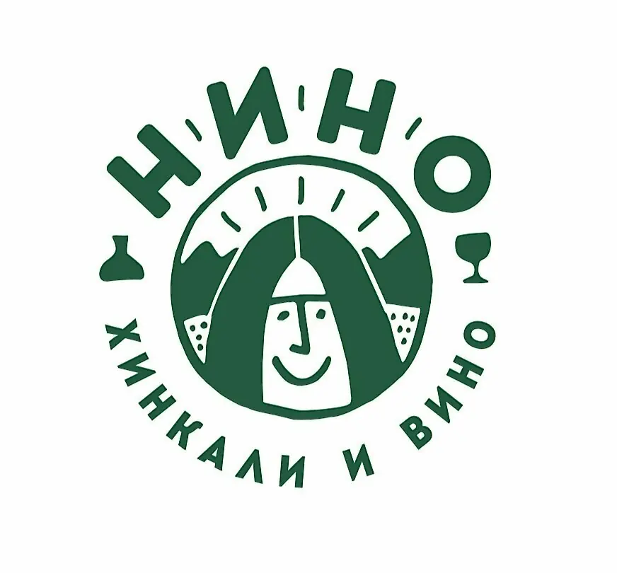
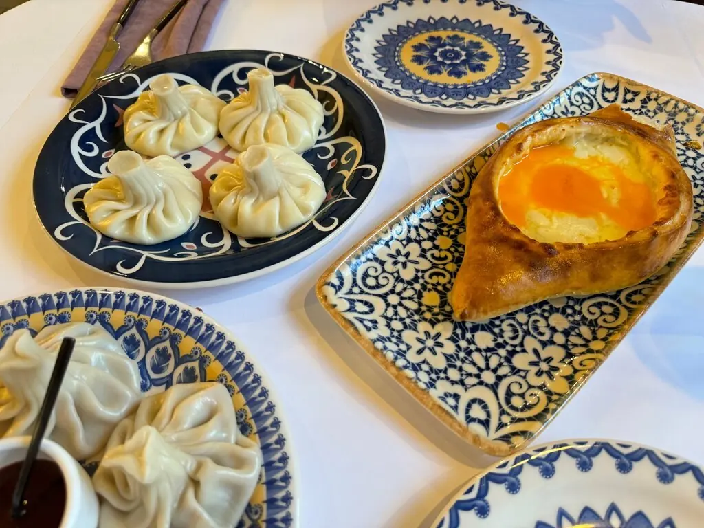
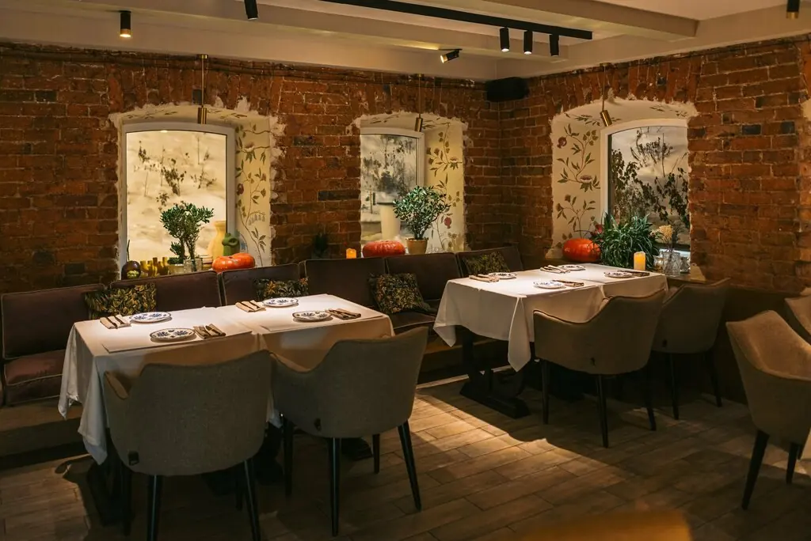
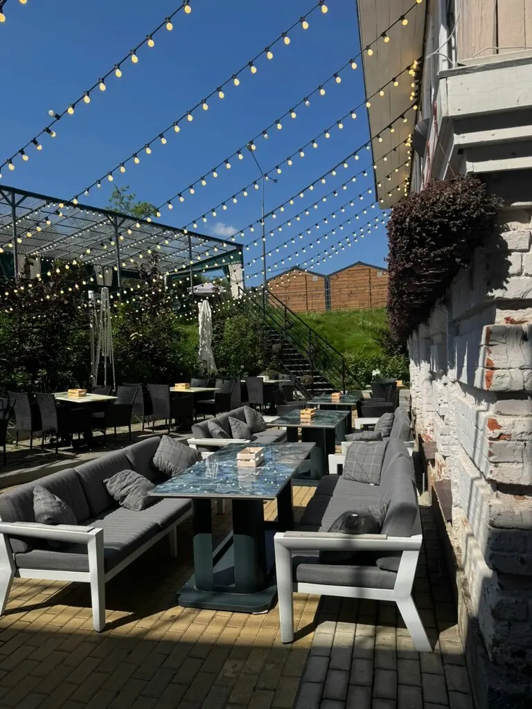
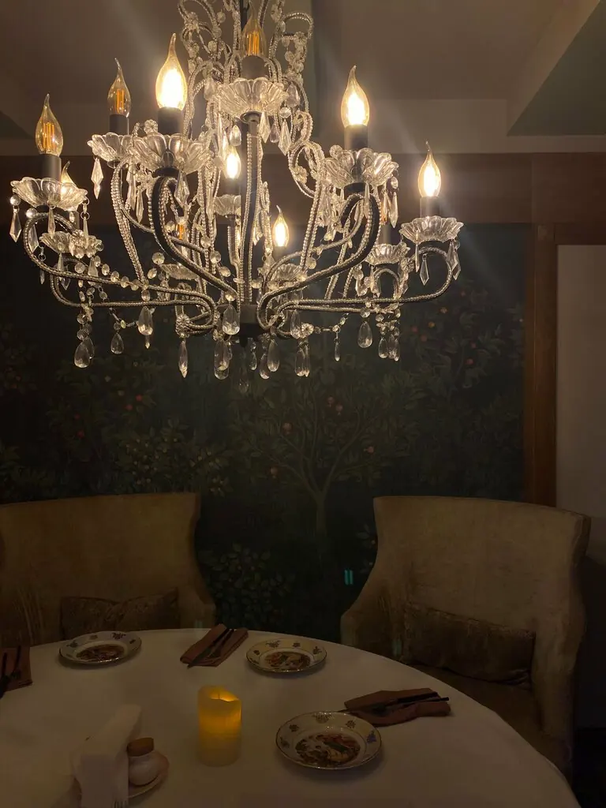

+7 992 004-59-69Нино хинкали и вино
Небольшой ресторан в старом особняке Екатеринбурга. Попробуйте хинкали разных видов, а когда тепло, садитесь на террасу.
5,0 · 633 оценки

Сколько хинкали съедите?
Подсчёт шуточный: примерно по три хинкали на гостя. В меню, например, хинкали с сыром страчателла и сулугуни за 570 ₽.
И кроме хинкали
Тартар из телячьей вырезки по-батумски850 ₽
Наваристый харчо с грудинкой670 ₽
Рулетики из баклажанов с сыром620 ₽
Аджапсандали из овощей на гриле530 ₽
Гриль-салат с телячьим языком850 ₽
Традиционный борщ с пампушкой490 ₽
Торт из тёмного шоколада с вишней620 ₽
Медовик со сливочным кремом650 ₽
Часть меню с Яндекс Карт, цены уточняйте у официанта.



Говорят
Очень вкусный хинкал. Как будто мама готовила. Молодцы, братья.Артур Пивосян
Вкусно, уютно, красиво и внутри, и снаружи. С днём рождения поздравили.Мария Гурьева
Попробовали разные хинкали. Когда тепло, можно посидеть на улице.Ольга Зорькина